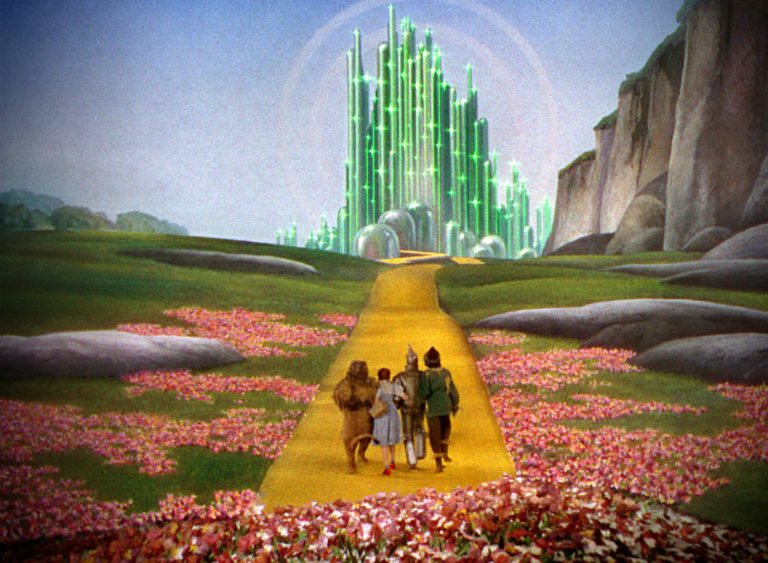

In a quick glance at some mainstream news sources, there’s evidence that things aren’t all sunshine and flowers in the world. Crime, scandals, poverty… it just doesn’t end! But is this an accurate picture on a multi-decade timeline? Arguably not, and I find it helpful to reflect on positive big picture trends. Although hedonic adaptation may enable us to constantly adjust to the new normal, there’s good reason to think that humanity’s trajectory can look positive from at least some perspectives. Here’s a few trends that could be considered positive indicators of our future.

Renewable energy sources
The concept behind renewable energy is that it can be replenished within a reasonable timespan. At the end of the day, the amount of easily accessible oil on the planet is limited, and in the long run we will probably need something else. Putting aside arguments over whether the current acceleration towards renewable energy is sufficient to allow for greenhouse gas reduction, the global trend is certainly in the right direction. Iceland already generates about 100% of their electricity needs using renewable sources (thanks largely to the geothermal activity on their island), while Sweden is over the 50% threshold and Germany is around the 20% mark. With current trajectories, there should be significant improvement in these numbers over the coming decades.
Medicine
In a utopia mindset, medicine can be considered the eradication of diseases and sickness. By many measures we’re arguably early in this journey, but the global eradication of smallpox has shown this is possible. Polio is likely to be the next disease to be globally eradicated, and substantial effort is being put into eradicating malaria. Outside of these infectious diseases, there’s reasons to hope that knowledge around what constitutes a healthy diet (by today’s standards of “healthy”) is becoming more widespread, such as sugary drink taxes in multiple countries. Although the number of diet-related health risks is very high worldwide, the continued developments in the medical field appear to be able to support increasing longevity for decades to come.
Finance
It’s harder to answer the question of what a utopian global economics situation looks like. Would the world be a better place if everyone was suddenly a millionaire, or would there be significant downsides to such a situation? If the entire world’s population was shopping and consuming at the level of many developed nations, there may be substantial environmental impact. Without dwelling too much on the philosophical nature of utopian economics, I think one scenario of an ideal state of global economics is a post-scarcity economy. Based on my minimal knowledge of personal finance, it appears there’s growing interest in the concept of financial independence, which could be considered an early indicator of an increasing percentage of the population moving towards this end goal. However, since the global wealth distribution clearly has a long way to go, it’s a question of whether this issue is improving at a reasonably pace for everyone, or only for certain people.
These are only a few areas to ponder the future of, but absent are, among others: the massive increase in technology over the last several decades, the decrease of violence (see Bill Gates’ recommendation for “The Better Angels of Our Nature” by Pinker), and the decreasing costs of food and energy. As a last tip, if longer term thinking is of interest to you, the Long Now Foundation may be relevant.
Weekly Extreme Exception
One future technology that’s been discussed for decades is the notion of a self-driving car. While there’s a lot of companies working on the real deal at the current time, it’s fun to take a look at the state-of-the-art technology back in 2005! This DARPA Grand Challenge required an autonomous vehicle to drive over 100 miles through the desert. It’s interesting how that task is easier today, but isn’t yet considered something that a small team of undergraduate students can put together for a class project. It makes me ponder if we are as close to fully autonomous vehicles as many companies think we are.